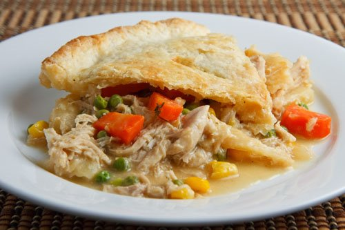

Chicken Pot Pie

A cozy and delicious meal for those days that are cold.
While this dish does take some time (really, what home cooking doesnt?), it's really worth trying out.
Think: Marie Caullenders, but at home!
Ingredients:
- 6 Tablespoons unsalted butter
- 1 Medium onion, diced
- 3 Carrots, sliced
- 2 Celery stalks, sliced
- 3 Cloves of garlic, minced
- 1/3 Cup of flour
- 3 large pinches of dried thyme
- 1/2 Cup of heavy cream
- 2 Cups chicken stock
- 600 Grams (around 1.3 pounds) cooked chicken
- 1 Cup of frozen peas
- Coarse salt (optional)
- 1 Egg, for egg wash
- Pie dough, for top and bottom (DIY recipe can be found here.)
Steps:
- Slice celery, carrots, and onion; mince garlic.
- Shred 600g of cooked chicken (can use mixer to cut time).
- Bring a pot to medium heat and melt 6 tablespoons of unsalted butter.
- Once fully melted, add the sliced veggies and garlic. Season as needed with salt and pepper.
- Cook until onions are translucent, then add 1/3 cup of flour. Add herb of choice.
- Add 2 cups of chickeb broth and 1/2 cup of heavy cream. Scrape the bottom well.
- Bring toa simmer and cook on low until it starts to thicken (no longer than about 10 minute). Season if need.
- Add heaping cup of frozen peas, along with shredded chicken and stir to incorporate.
- Go ahead and preheat the oven to 400 degrees.
- Roll out your pie dough. The bottom should be a little wider for deeper dishes. Gently secure it into the dish, don't stretch. The top piece should be the circumfrence of the dish.
- Prepare an egg wash with one egg.
- Finalize salt and pepper chicken mixture.
- Fill the pie dish!
- Cover the dish with top portion of pie dough. Use egg wash as binding agent around the edges. Seal the bottom edges over.
- Cover the top of the pie with egg wash for a nice golden color.
- Sprinkle some salt course salt and pepper on top.
- Bake for around 45 minutes.
- Let it cool for around 10 minutes before serving. Enjoy!